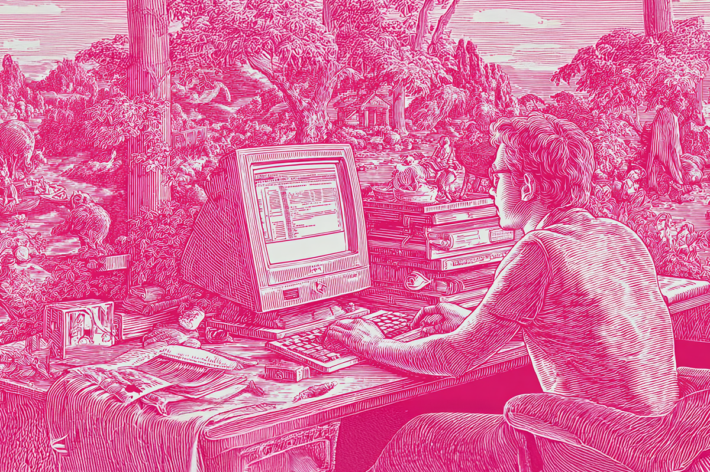
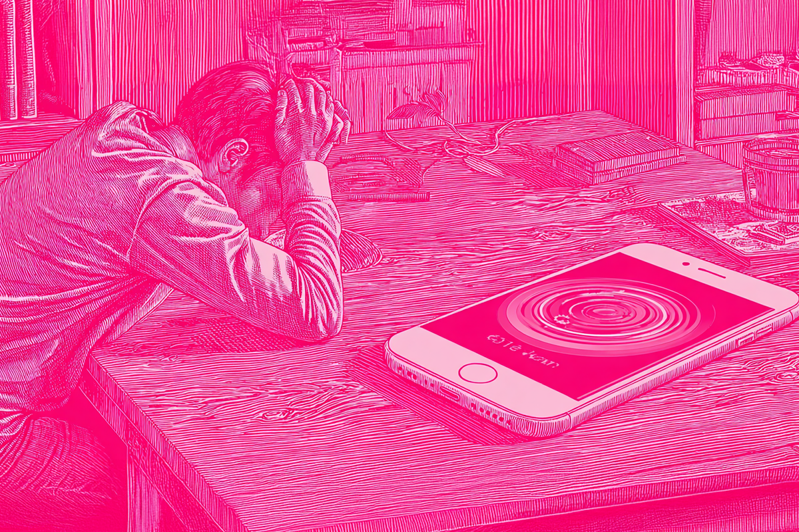
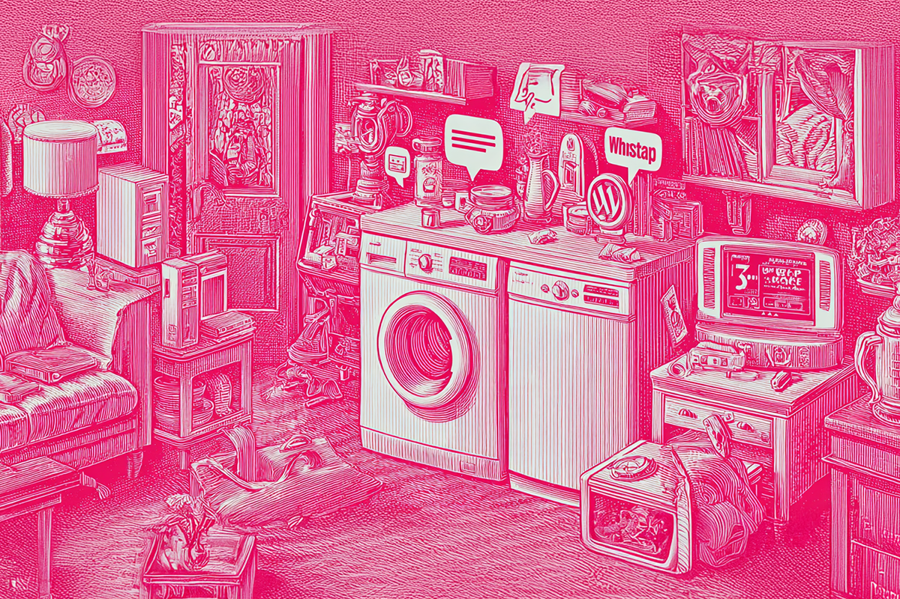
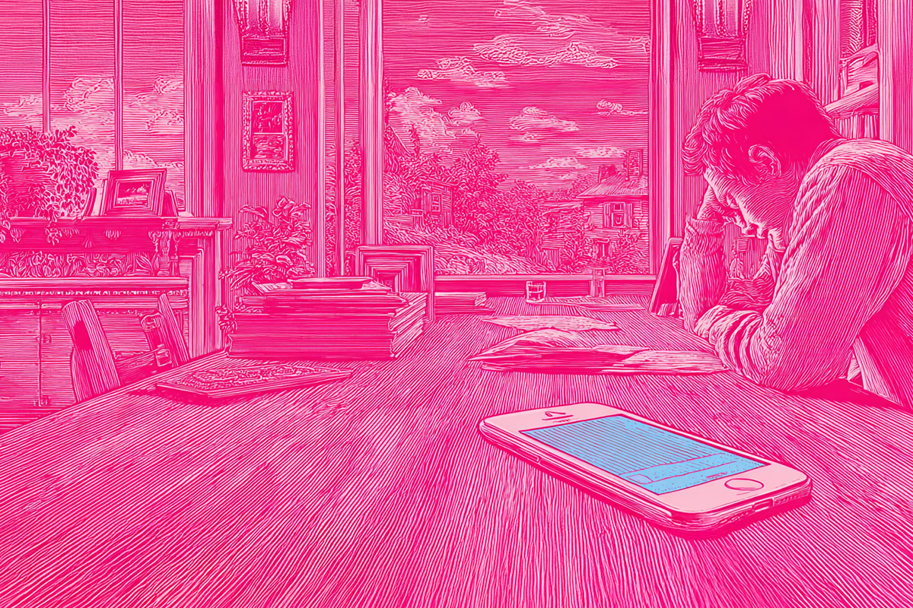

Ya basta de notificaciones
Del WhatsApp al mail del trabajo… ¿y ahora Spotify también quiere chatear?
Del WhatsApp al mail del trabajo… ¿y ahora Spotify también quiere chatear?

Spotify ya nos notificaba sobre lanzamientos, playlists, conciertos y podcast que “seguro te gustarán”. Pero la plataforma lanza una nueva función para enviar mensajes directos dentro de la app, llamada “Messages”, para que ahora puedas hacer llegar esa canción recomendada directamente a tus contactos sin salir de Spotify.
Suena entretenido, pero si somos honestos, también hace pensar hasta qué punto queremos más notificaciones y más apps sociales en nuestras vidas.

Si recordamos nuestros primeros años digitales, las comunicaciones eran simples: un SMS, un MSN o un link de YouTube compartido por correo. Todo era limitado, manejable y divertido.
Hoy, como millennials, vivimos rodeados de apps, notificaciones y mensajes que compiten por nuestra atención: WhatsApp, Instagram, TikTok, Messenger… y ahora Spotify. Cada app quiere ser más que lo que es, y cada notificación nos recuerda que estamos siempre “conectados”, pero rara vez presentes.

Y no es solo Spotify. CapCut, la app para editar videos, se ha vuelto un ejemplo del lado B de las notificaciones: invasivas, insistentes y poco útiles. Te bombardea con alertas para probar nuevas plantillas o filtros, incluso cuando no tienes intención de editar. El problema es que no siempre podemos desactivar todas las notificaciones: si las apagas, te pierdes las realmente importantes, pero si las dejas encendidas, terminas filtrando basura entre mensajes que sí necesitas. Y es ese ruido constante lo que llaman “fatiga digital”.

Si seguimos así, cualquier app podría volverse social:
La ironía es clara: la tecnología promete simplificar nuestra vida, pero a veces solo la complica. Como millennials, aprendimos a multitaskear, pero llega un momento en que el humor se mezcla con fatiga digital.

Así que, Spotify Messages no es malo; es creativo y hasta útil. Pero también es un recordatorio que la saturación digital también es real. Lo mismo con CapCut y su “necesidad” de llamar tu atención.
Al final, lo que más necesitamos no es otra notificación, sino un momento para escuchar nuestra música sin interrupciones, editar un video cuando realmente queremos… o simplemente estar offline un rato.
 Tecnología
TecnologíaSi eres como yo y revisas TikTok e Instagram constantemente, te habrás dado cuenta de que estas redes son casi como un experimento social.
 Tecnología
TecnologíaHablamos mucho de inteligencia artificial. La tenemos integrada en nuestra vida, nos ayuda en nuestros trabajos y le preguntamos cosas de…
 Tecnología
TecnologíaDurante años hemos pensado en la inteligencia artificial como algo súper frío: servidores gigantes, computadores procesando datos y…